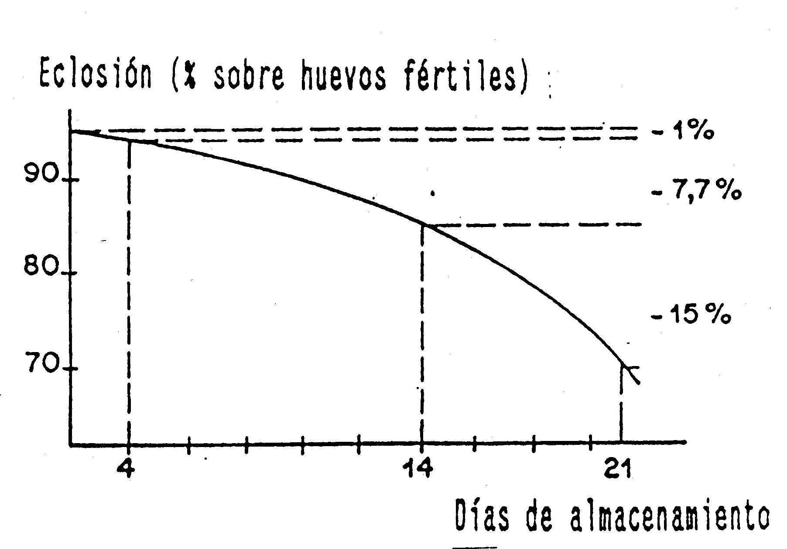
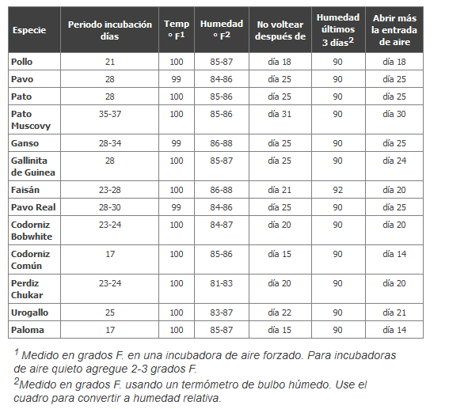

— archivado en: Producción Animal, Avicultura, Incubación, Huevo incubable
La mayoría de los productores colocan tantos huevos como producen sus reproductores. Si el espacio de la incubadora es el factor limitante, es más rentable seleccionar los huevos de mejor calidad para incubarlos.
Algunos consejos para seguir al seleccionar huevos fértiles son:
tiempo almacenamiento vs eclosión
Muchas veces un productor atiende cuidadosamente el proceso de incubación pero no tiene en cuenta el cuidado de los huevos antes de colocarlos en la incubadora. Incluso antes de que empiece la incubación, el embrión está desarrollando y tiene necesidad del cuidado adecuado. Si no se atienden adecuadamente los huevos fértiles, se puede tener un menor porcentaje de incubación.
A continuación damos consejos para ayudar a mantener la calidad de los huevos fértiles:
El inadecuado control de temperatura y humedad produce por lo general malos resultados. El control inadecuado significa que la temperatura o la humedad está demasiado alta o demasiado baja durante el tiempo suficiente para que interfiera con el crecimiento normal y el desarrollo del embrión. También se dan malos resultados debido a una ventilación inadecuada, las vueltas no apropiadas que se dan al huevo, y el mal saneamiento de las máquinas o de los huevos. Obtenga la mejor eclosión manteniendo la temperatura a 100 grados F (37.7 C) durante todo el período de incubación al utilizar una incubadora de aire forzado.
Mantenga la incubadora de aire quieto a 102 grados F (38.8 C) para compensar la estratificación de la temperatura dentro de la incubadora. Obtenga la lectura adecuada de la temperatura elevando el bulbo del termómetro a la misma altura que la parte superior de los huevos, cuando los huevos están colocados horizontalmente.
Si los huevos están colocados en posición vertical, eleve el bulbo del termómetro a un punto que esté entre ¼ y ½ pulgada ( 0.6 a 1.2 cm) y por debajo de la parte superior de los huevos. La temperatura se mide en el nivel donde se desarrollan los embriones (en la parte superior del huevo). No permita que la bombilla del termómetro toque los huevos o la incubadora. Obtendrá mediciones incorrectas como resultado.
¿Qué debe hacerse si se apaga el poder de energía durante la incubación? Una respuesta correcta depende de varios factores, algunos de los cuales incluyen la temperatura de la habitación donde se encuentra la incubadora, el número de huevos en la máquina, y si los huevos están en la etapa temprana o tardía de incubación.
Las dos consideraciones más importantes en esta situación son (1) cuidar que los huevos no se recalienten y (2) asegurarse que tienen un suministro de oxígeno adecuado. Cuanto más incuban los huevos y cuanto mayor sea el número de huevos en la incubadora, mayor será la posibilidad que pueda experimentar sobrecalentamiento y la asfixia de los embriones.
Si la habitación donde se encuentra la incubadora es caliente y con el aire cargado, usted deberá reaccionar más rápidamente a los apagones que si la sala se mantiene a 75 grados F (23 C) y está bien ventilada. La medida más eficaz contra el sobrecalentamiento y la asfixia es abrir la puerta de la incubadora o nacedora. Bien sea que la puerta se abre ligera o completamente y la longitud del tiempo que se deja abierta depende de los factores mencionados anteriormente.
Se deben girar los huevos al menos 4 - 6 veces diariamente durante el período de incubación. No voltee los huevos durante los últimos tres días antes de la eclosión. Los embriones se están colocando en la posición de eclosión y no necesitan que se les voltee. Mantenga la incubadora cerrada durante la eclosión para mantener la humedad y la temperatura adecuada. Los orificios de ventilación deben estar casi completamente abiertos durante las últimas etapas de incubación.
Los huevos se colocan inicialmente en la incubadora con el e xtremo más grande para arriba u horizontalmente con el extremo grande ligeramente elevado. Esto permite al embrión permanecer orientado en una posición adecuada para eclosionar. Nunca ponga los huevos con el extremo pequeño hacia arriba.
El cuadro a continuación enumera los requisitos de incubación para diferentes especies de aves.
En las incubadoras comerciales grandes, a menudo se colocan huevos de diferentes edades y cada ajuste se transfiere a una unidad separada antes de la eclosión. Las unidades con eclosión por separado (nacedoras) permiten practicarse adecuadas medidas de saneamiento y de control de enfermedades entre lotes de pollos. Los pollitos pueden eclosionar sin molestar a los otros huevos en incubación.
Un minucioso trabajo de limpieza resulta en una mejora de 95-99% en cuanto a control de enfermedades. Cuando se hace correctamente, se requiere poco o ningún desinfectante. Si se emplea un desinfectante, lo más común es el amonio cuaternario y se utiliza para equipos como incubadoras y bandejas de eclosión.
Partiendo de un contenido de O2 en el aire del 21%, el Cuadro 3 muestra los niveles adecuados de ventilación que se requieren, así como el CO2 expulsado por los embriones.
La fumigación es otra herramienta para control de enfermedades y es algo bueno a lo cual acudir cuando bien sea que la limpieza es deficiente, los huevos están sucios, o las máquinas están llenas de huevos y es difícil de vaciar y limpiar adecuadamente. El proceso de fumigación puede ser peligroso para el productor si no se llevó a cabo cuidadosamente.
(Fuente: Servicio de Extensión de la Universidad Estatal de Mississippi - mayo 2004)